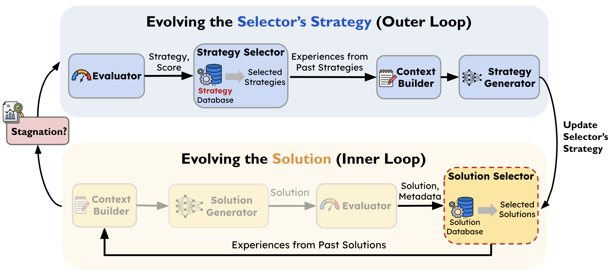

LLM-driven evolutionary search is emerging as a powerful approach for discovering algorithms and system designs, but existing frameworks are difficult to reuse, extend, and compare. We introduce SkyDiscover, a flexible and modular framework for AI-driven scientific and algorithmic discovery, providing a unified interface for running and comparing a wide range of methods across 200+ real-world optimization tasks.
Using SkyDiscover, we implement two evolutionary algorithms in under 2K LoCs, achieving:
- Best open-source performance (vs. OpenEvolve, GEPA, ShinkaEvolve), with ~20% higher median score on 176 competitive programming problems.
- Matching or exceeding AlphaEvolve and human SOTA on 8 mathematical and 6 systems optimization tasks.
- Real-world system and algorithm discoveries, including 41% lower cloud transfer cost, 4.5× faster MoE expert load balancing, and 29% lower KV-cache pressure for GPU model placement.
Explore SkyDiscover and build your own discovery pipeline:
Background: The Rise of AI-Driven Discovery
A defining capability of intelligent systems is the ability to learn from experience. Rather than producing a single solution, modern LLM-driven systems can iteratively improve by building on prior discoveries.
One especially powerful paradigm is LLM-driven search pioneered by AlphaEvolve. In this approach, the system maintains (I) a population of prior solutions in a solution database, samples or searches through them to (II) construct prompts incorporating past experiences that guide the (III) generation of new candidates. These candidates are then (IV) evaluated, and the resulting solutions, along with metadata such as scores, are added back into the population.
Together, these components form a closed discovery loop, as illustrated in the figure below.

Many open-source AI-driven discovery frameworks, including AlphaEvolve, OpenEvolve, GEPA, and ShinkaEvolve, have demonstrated the promise of this paradigm. For example, AlphaEvolve discovered new algorithms for matrix multiplication and enabled scheduling optimizations in Google's data centers. GEPA learned reusable agent skills, achieving near-perfect Claude Code task completion, and optimized agent architectures across diverse domains.
Together, these results establish LLM-driven search as a powerful approach for scientific and algorithmic discovery.
Challenge: Lack of Modular Implementations
Despite rapid progress, today's discovery frameworks remain difficult to reuse, extend, or compare.
At a high level, most systems follow the same conceptual loop: selecting useful experiences from prior solutions, constructing prompts, generating candidates, evaluating them, and updating the population. While modular in principle, existing implementations tightly couple these components. For example:
- OpenEvolve: Couples MAP-Elites–based selection mechanism in the solution database with fixed prompt templates.
- GEPA: Couples Pareto-front selection with recombination and mutation operators embedded directly in prompt construction.
- ShinkaEvolve: Integrates novelty rejection and diversity control within the solution database, and implements adaptive LLM selection based on search progresses.
As a result, modifying or replacing individual parts, such as testing a new strategy that adaptively monitors optimization progress and selects candidates, typically requires modifying the core implementation. Moreover, each framework is built and evaluated using different codebases, benchmarks, and experimental setups, making comparisons challenging.
This lack of modularity slows progress:
- Innovation is costly: New ideas often require modifying monolithic systems.
- Infrastructure is duplicated: Shared components (e.g., solution database, progress tracking, and benchmarking pipelines) are repeatedly reimplemented.
SkyDiscover: A Flexible Framework for AI-driven Scientific and Algorithmic Discovery
To address these limitations, we built SkyDiscover, a modular and flexible framework for AI-driven discovery, designed around two key goals:
- Generality: Support diverse discovery algorithms and enable unified evaluation on shared benchmarks.
- Flexibility: Enable rapid implementation and evaluation of new discovery techniques without modifying a monolithic system.
A Richer, More Extensible Architecture

As illustrated above, SkyDiscover follows the same high-level evolutionary loop as prior systems, but exposes each stage as a reusable component, yielding a similar yet more extensible architecture. The discovery loop consists of four components:
- Context Builder. Combines problem context with selected solutions, either by directly incorporating them or by deriving useful experiences (e.g., ideas, guidance, reflection), to construct the next prompt.
- Solution Generator. Produces candidate solutions via LLM reasoning, optionally with tool interaction (e.g., reading codebases, web search, execute code).
- Evaluator. Scores candidate solutions and logs feedback, generating metadata (e.g., scores, logs, artifacts), which are stored back into the solution database for future iterations.
- Solution Selector. Maintains the solution database and determines which prior solutions to retrieve (e.g., Top-K, MAP-Elites, Pareto, etc.).
The key extension in SkyDiscover is its programmable solution selection and guidance mechanism, which turns the traditional solution database into an active discovery component.
In prior systems like AlphaEvolve, the database mainly stores past solutions and scores, while selection logic and prompting strategies are fixed within the pipeline. In contrast, SkyDiscover makes guidance fully programmable. The Solution Selector determines which prior solutions to retrieve, while the Context Builder decides how to interpret and incorporate them into subsequent prompts. This enables functionality such as:
- Flexible selection strategies, including Top-K, Pareto optimization, MAP-Elites, and island-based search
- Richer experience construction, such as guidance, reflections, critiques, and strategy suggestions derived from past runs
By making selection and context construction programmable, SkyDiscover transforms evolutionary search from a fixed pipeline into a fully extensible discovery process.
Unified Evaluation Across Frameworks and Benchmarks
SkyDiscover's modular design enables unified evaluation. The framework supports existing SOTA frameworks and search algorithms such as OpenEvolve, GEPA, and ShinkaEvolve, along with simple baselines like Best-of-N and beam search, all within a shared infrastructure. It also includes nearly 200 real-world optimization tasks for systematically comparing these algorithms.

SOTA Discovery Algorithms Built on SkyDiscover
Leveraging SkyDiscover's modular abstraction, we developed two new evolutionary algorithms, AdaEvolve and EvoX, that achieve state-of-the-art open-source performance, outperforming OpenEvolve, GEPA, and ShinkaEvolve.
Low Implementation Overhead
SkyDiscover provides a shared backbone of ~8K LoC implementing the full evolution pipeline. New search algorithms require only a thin layer on top: simple methods such as Top-K and Best-of-N take <100 LoC, while even advanced algorithms such as AdaEvolve and EvoX require fewer than 2k LoC. In contrast, prior systems typically require modifying 5K to 6K LoC per algorithm.
We evaluate AdaEvolve and EvoX across mathematical optimization, systems design, and competitive programming tasks using a fixed budget of 100 candidate generations.
Mathematical Optimization
AdaEvolve and EvoX discover improved solutions for challenging problems, such as circle packing and geometric optimization, matching or exceeding the best results reported by AlphaEvolve across multiple tasks.

Systems Optimization
AdaEvolve and EvoX discover improved system designs across cloud scheduling, load balancing, model placement, and transaction optimization tasks. The best solutions achieve 41% lower cloud transfer cost, 4.5× faster MoE expert load balancing, and 29% lower KV-cache pressure for GPU model placement.

Algorithmic Challenges
AdaEvolve and EvoX achieve the highest performance among open-source discovery methods on Frontier-CS, evaluated over 172 competitive programming problems. The framework attains a mean score of 62.6 and a median score of 75.5, improving over the strongest prior AI-based discovery methods by 24% and 34%, respectively.

How Do These Two Discovery Algorithms Work?
We now introduce two complementary evolutionary paradigms operating at different levels. AdaEvolve dynamically adapts the discovery strategy based on observed run-time progress, while EvoX goes further by self-evolving the guidance mechanism itself using LLMs.
#1: AdaEvolve: Progress-Aware Guidance for Discovery
Most discovery systems rely on fixed strategies (e.g., static exploration rates, rigid temperatures, fixed prompt templates), which often waste compute when discovery dynamics change. The optimization process searching for better solutions should account for these dynamics. In the domain of continuous optimization, adaptive gradient methods like AdaGrad and Adam tackles these issues by dynamically adjusting learning rates adaptively using the moments of gradients. However, for LLM based discovery, which is a zeroth order (gradient-free) optimization process, we need new formulations to rethink how we adapt the search dynamics.
AdaEvolve treats discovery as a non-stationary optimization process, dynamically adjusting search behavior as a function of observed progress and improvement signals.

AdaEvolve operates through three levels of adaptation:
- Global Adaptation: Maintains multiple subpopulations (islands) and dynamically creates new islands or reallocates compute across islands using bandit-based scheduling.
- Local Adaptation: Adjusts the exploration–exploitation balance within each island population.
- Meta-Guidance: Introduces new solution techniques when progress stalls.
Collectively, these mechanisms allow AdaEvolve to continuously reshape the discovery strategy in response to observed search dynamics.
#2: EvoX: Meta-Evolving the Discovery Strategy
Instead of relying on a fixed, manually designed discovery strategy, EvoX evolves the discovery strategy itself using the LLM.
Prior methods depend on static strategies that determine which solutions to select and how to construct guidance. These strategies remain fixed throughout the run and cannot improve during discovery. EvoX removes this limitation by treating the discovery strategy as an evolving object. During execution, EvoX uses the LLM to generate and refine strategies, evaluates them based on the improvements they produce, and retains the most effective ones.
Specifically, EvoX evolves:
- Selection: Which prior solutions to retrieve from the database
- Variation: How to transform or combine solutions (e.g., refinement, diversification, recombination) and incorporate them into prompts
By evolving both solutions and the strategies that generate them, EvoX enables continuous adaptation at two levels: the solution level and the discovery-strategy level.

Case Studies: Discoveries Across Domains
We highlight representative discoveries produced by AdaEvolve and EvoX (implemented on top of SkyDiscover) across diverse domains and benchmarks.
Example 1: Circle Packing (Rectangle, n=21)
Problem. Place 21 non-overlapping circles inside a rectangle with fixed perimeter (4), maximizing the total sum of circle radii. A larger radii sum corresponds to a denser feasible packing under strict geometric constraints, representing a stronger constructive solution to a classic continuous optimization benchmark.
The starting program returns 21 circles, all positioned at (0, 0) with radius 0, which is effectively an empty packing. This serves as a blank slate for the evolutionary search.
Result. Starting from this trivial "empty" program, AdaEvolve discovers diverse geometric initializations (grid + perturbations) and subsequently refines promising candidates using constrained optimization (SLSQP). The final program reaches 2.36583237, surpassing the AlphaEvolve reference of 2.36583213.
Circle Packing Best Solution
# EVOLVE-BLOCK-START
import numpy as np
from scipy.optimize import minimize
def circle_packing21() -> np.ndarray:
"""
Optimizes 21 circles to maximize radii sum in a perimeter-4 rectangle.
Pipeline:
1. Generate diverse seeds (Triangular, Staggered, Random) with clean & noisy variants.
2. Vectorized physics relaxation (dt=0.005, linear stiffness) to minimize bounding box.
3. Select top 5 candidates based on packing density.
4. Refine using SLSQP with variable radii (high precision, 1e-9 ftol).
5. Robust post-processing: enforce non-overlap and scale to exactly perimeter 4.
"""
np.random.seed(42)
n = 21
# ... (full implementation)
# EVOLVE-BLOCK-END
if __name__ == "__main__":
circles = circle_packing21()
print(f"Radii sum: {np.sum(circles[:,-1])}")Reproduce it yourself!
uv run skydiscover-run \
circle_packing_rect/initial.py \
circle_packing_rect/evaluator.py \
--config config_adaevolve.yaml \
--iterations 100
Example 2: Max/Min Pairwise Distance Ratio in 3D (n = 14)
Problem. The task is to place exactly 14 points in 3D space such that the closest pair of points is as far apart as possible relative to the farthest pair. Specifically, the objective is to minimize (dmin / dmax)², where dmin denotes the smallest distance between any two points, and dmax is the largest distance between any two points.
In intuitive terms: distribute the points as evenly as possible. The ideal configuration is one in which pairwise distances are as similar as feasible.
Result. EvoX discovers the best solution via constrained numerical optimization (SLSQP), starting from three carefully chosen geometric seeds: a rhombic dodecahedron (vertices of a well-known uniform polyhedron), a bi-capped hexagonal anti-prism (another symmetric 3D arrangement), and random perturbations (for diversity). The final solution achieves a score of 4.16579879192, improving upon the 4.165849767 result reported by AlphaEvolve.
Max/Min Ratio Best Solution
# EVOLVE-BLOCK-START
import numpy as np
from scipy.optimize import minimize
def min_max_dist_dim3_14() -> np.ndarray:
"""
Constructs 14 points maximizing min/max dist ratio using SLSQP.
Seeds: Rhombic Dodecahedron, Bi-capped Antiprism, Random.
Optimizes variable t such that d_ij^2 >= t with d_ij^2 <= 1.
"""
n, d = 14, 3
# ... (full implementation)
# EVOLVE-BLOCK-END
Example 3: Multi-Region and Cloud Data Transfer
Problem. Broadcast a large dataset from a source region to multiple destinations across cloud providers (e.g., AWS, GCP, Azure) under heterogeneous egress pricing. The objective is to minimize total transfer cost while delivering data to all destinations.
Result. Starting from a Dijkstra shortest-path baseline, EvoX learns to construct shared relay trees that reuse intermediate regions across transfers, forming Steiner-like topologies when cost-effective.
On the benchmark setting involving the transfer of 300GB of data from the GCP Singapore region to six cross-cloud destinations, the discovered strategy reduces cost from $1046 to $623 (41% cost reduction). This outperforms OpenEvolve (32%), GEPA (38%, up to 40% with 250+ iterations), and ShinkaEvolve (22%), all evaluated under a fixed budget of 100 iterations.
CloudCast Best Solution
# EVOLVE-BLOCK-START
import networkx as nx
import json, os
import pandas as pd
from typing import Dict, List
def search_algorithm(src, dsts, G, num_partitions):
"""
Ensemble Steiner Tree Search with Frequency-Based Candidate Selection.
"""
# ... (full implementation)
# EVOLVE-BLOCK-END
Example 4: MoE Expert Load Balancing
Problems. In Mixture-of-Experts (MoE) inference, each token is routed to a small subset of experts. Certain experts can become "hot," creating GPU bottlenecks where the most-loaded GPU dictates end-to-end throughput. The goal is to replicate hot experts and place expert replicas across GPUs to equalize load, while ensuring the rebalancing algorithm remains efficient enough to run periodically.
Setup. We simulate dynamic load variations using traces derived from the ShareGPT and GSM8K datasets. The objective is twofold: (i) maximize the load balance factor, defined as the ratio of average to maximum tokens processed per GPU, and (ii) minimize the runtime of the expert rebalancing algorithm. Algorithms are evaluated using a weighted combination of the load balance factor and inverse runtime, where higher scores indicate better overall performance.
Result. Starting from a greedy bin-packing baseline, AdaEvolve discovers a rebalancing algorithm that applies Webster's method with binary search for replica allocation, combined with a zigzag packing pattern across GPUs using vectorized tensor operations. This improves GPU load balance by 14% (0.663 → 0.758) over the DeepSeek baseline while simultaneously reducing the rebalancing latency from 514 ms to 55 ms.
AdaEvolve achieves an overall score of 0.1453, outperforming other AI-driven baselines (OpenEvolve 0.1272, GEPA 0.1445, ShinkaEvolve 0.1272).
EPLB Best Solution
# EVOLVE-BLOCK-START
import torch
def _balanced_round_robin_pack(costs, num_packs, items_per_pack):
"""Equal-cardinality balanced packing."""
# ... (full implementation)
def _apportion_divisor(tokens, total_replicas):
"""Divisor water-filling apportionment (Webster-like)."""
# ... (full implementation)
def rebalance_experts(weight, num_replicas, num_groups, num_nodes, num_gpus):
"""Global fast rebalance."""
# ... (full implementation)
# EVOLVE-BLOCK-END
Example 5: GPU Model Placement for LLM Serving
Problem. Given multiple LLM models and a cluster of GPUs (each with 80 GB memory), the goal is to assign models to GPUs to minimize the maximum KV-cache pressure ratio (KVPR) — defined as the ratio of request load to available memory. Lower KVPR indicates reduced GPU bottlenecks, improving serving throughput and stability.
Result. Starting from a naive first-fit packing baseline, EvoX discovers a binary-search + best-fit-decreasing strategy that jointly optimizes model size and request pressure by mapping each model to a combined weight and performing bin packing against a tuned capacity threshold.
Across 50 test scenarios, EvoX achieves a KVPR of 0.0339 (lower is better), improving upon the prior human SOTA (Arxiv'25, KVPR = 0.0479) by 29%, with 100% successful placements across all scenarios (5–9 GPUs, 10–18 models). EvoX also outperforms other evolutionary frameworks: OpenEvolve (0.0396), GEPA (0.0396), and ShinkaEvolve (0.0396) by 14%.
PRISM Best Solution
GPU_MEM_SIZE = 80 # GB
# EVOLVE-BLOCK-START
def compute_model_placement(gpu_num, models):
"""Minimize max KVPR via binary search on T."""
# ... (full implementation)
# EVOLVE-BLOCK-END
What SkyDiscover Enables
1. Simple, Easy-to-Use API
We support different discovery frameworks and algorithms through simple, modular abstractions.
from skydiscover import run_evolution optimized_solution = run_evolution( initial_program="path/initial.py", evaluator="path/evaluator.py", search="adaevolve", # evox, gepa, openevolve, shinkaevolve, bon, ... model="gpt-5", iterations=100, )
2. Monitoring and Controlling the Discovery Process with a Human-in-the-Loop
Call to Action
SkyDiscover is open-source and designed to support the next generation of AI-driven discovery. We invite the community to:
- Use SkyDiscover to tackle challenging optimization and discovery problems
- Compare discovery methods within a unified framework
- Implement new discovery algorithms through a simple, modular interface
- Contribute new problems and benchmarks to advance AI-driven discovery
Acknowledgments: This research was supported by gifts from Accenture, AMD, Anyscale, Broadcom Inc., Google, IBM, Intel, Intesa Sanpaolo, Lambda, Mibura Inc, Samsung SDS, and SAP.